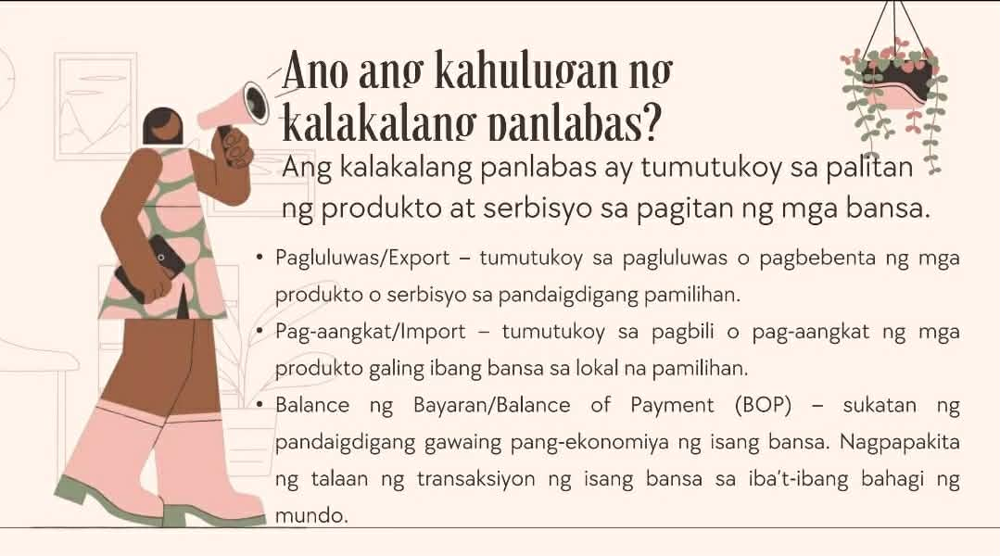
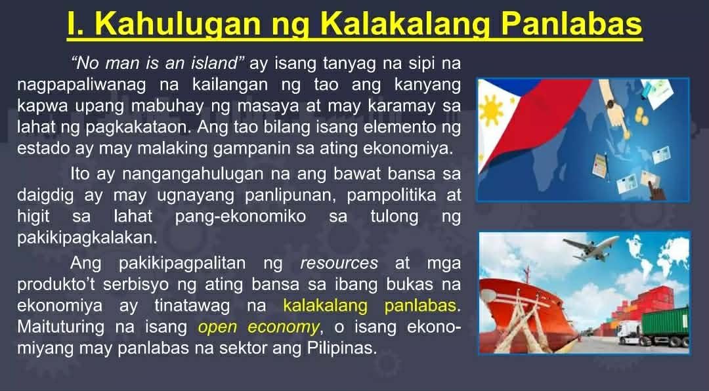

🌐 Kalakalang Panlabas
Aralin 6 - Quarter 4
Ano ang Kalakalang Panlabas?
Palitan ng produkto at serbisyo sa pagitan ng mga bansa. Ito ay nagaganap sapagkat walang bansa ang maaaring makatugon sa lahat ng kanyang pangangailangan nang walang tulong mula sa ibang bansa.
- Bilateral: 2 bansa (hal. U.S at PH)
- Bloc: Organisasyon at 1 bansa (hal. APEC at PH)
- Eksport (Pagluluwas): pagpapadala ng produkto at serbisyo sa ibang bansa
- Import (Pag-aangkat): pagbili ng kalakal mula sa ibang bansa
Dahilan ng Kalakalang Panlabas
- Pagkakaiba ng Teknolohiya
- Pagkakaiba sa Pinagkukunang Yaman
- Pagkakaiba sa Panlasa
- Pagkakaiba sa Halaga ng Produksyon
Patakarang Umaapekto sa Kalakalang Panlabas
- Taripa/Tariff: Buwis sa mga produktong inaangkat; nagpapataas ng presyo at nagpapababa ng benta ng inaangkat na produkto
- Kota/Quota: Maaaring limitahan ang pagpasok ng kalabang produkto
- Subsidy: Tulong ng gobyerno para bumaba ang halaga ng produksyon ng lokal na produkto
Batayan ng Kalakalang Panlabas (David Ricardo)
- Absolute Advantage: Nakakalikha ng mas maraming produkto gamit ang mas kaunting salik ng produksyon kumpara sa ibang bansa
- Comparative Advantage: Espesyalisasyon sa paggawa ng kalakal; mas efficient kaysa ibang bansa (hal. Cebu sa Lechon)
Balance of Trade (BOT)
- Trade Deficit: import > export
- Trade Surplus: import < export
Kabutihan at Di-Kabutihan ng Pakikipagkalakalan
- Kabutihan: mas maraming produkto, mas mataas na kalidad, pagkakaunawaan sa ibang bansa, lumalawak ang pamilihan
- Di-Kabutihan: pagiging palaasa sa produktong imported, hindi nalilinang ang pagkamalikhain, pagkawala ng sariling pagkakakilanlan
Samahang Pandaigdigang Pang-ekonomiko
- World Trade Organization: pinasimulan noong Enero 1, 1995; layunin: pagsusulong ng maayos na kalakalan at trade barriers reduction
- APEC: layunin: liberalisasyon ng kalakalan at pamumuhunan, tulong-teknikal sa developing countries
- ASEAN: layunin: malayang kalakalan sa rehiyon, nabuo ang ASEAN Free Trade Area (AFTA)
Programang Nagtataguyod sa Kalakalang Panlabas
- Liberalisasyon sa Sektor ng Pagbabangko (R.A 7721)
- Foreign Trade Services Corps (FTSC)
- Trade and Industry Information Center (TIIC)
- Center for Industrial Competitiveness

